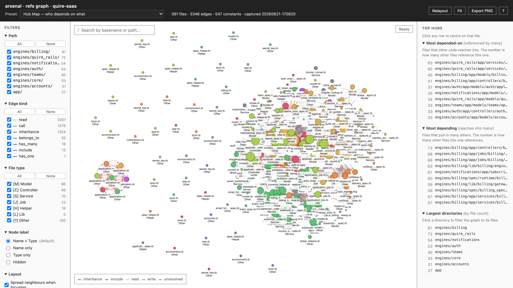

A Rails refactor is a
promise made in the dark.
The pain
Prove it.Scope it.Stop safely.
The team knows the monolith is the problem. They just can't do any of those three.
Most stuck-monolith problems
aren't code problems.
They're commitment problems.
Where this came from
I wrote the book on the boundaries.
Then I had to prove them
in someone else's monolith.
Waving Modular Rails at a codebase isn't evidence. I wanted a thing I could hand an engineer on a Monday.
What if a refactor were
not a pitch — but a
runnable plan?
arsenal
A Rails monolith → a runnable refactor epic: diagnosis · phased plan · dependency graph · sequenced issues · safe stops · a definition of done
David Silva · 15+ yrs Ruby · @davidslv · davidslv.uk
The deliverable
DIAGNOSISevery claim anchored in your codebase — numbers, file paths, git history
THE PLANa phased epic — a dependency graph and sequenced sub-issues
SAFE STOPSa real win at the end of every phase
DONEa verifiable definition of done, opened as GitHub issues
It doesn't give you an opinion.
It gives you evidence.
The difference · grounding
Every finding cites a named authority.
Robert C. Martin
component principles — REP · CCP · CRP · ADP · SDP · SAP
Meilir Page-Jones
connascence — name · meaning · algorithm · timing · identity
Martin Fowler
the named smell, the named refactoring that fixes it
The Rails Way
DHH · Dementyev · Valim — and my own Modular Rails
arsenal · bin/patterns · run on carer-notes
66
cited detectors ran · 26 fired · 583 findings
Each detector pairs a signature with a teaching recipe — most of an epic's sub-issues come straight out of them. Nothing here is the tool's taste.
The demo
Five commands. A cold codebase in,
a runnable plan out.
Recorded, not live — a replay of a real run. Watch the numbers: every one comes off the codebase, not the tool.
Demo · recorded · a real arsenal session (carer-notes)
arsenal — diagnose → patterns → finding → cochange → epic (recorded)
diagnose → 66 cited detectors (26 fired) → a real CRITICAL finding → a real co-change pair → epic scaffolds the template you fill in · click to pause / replay
What that just did · in plain terms
It produced the evidence a senior
architect spends a week gathering.
It read the whole codebase
33.6k LOC — every model, spec, migration. not a sample
26 of 66 detectors fired
583 findings, each cited to a named authority — not "best practice"
It found a real CRITICAL bug
a unique index on a soft-deleted table — cited, with the fix
It saw what the AST can't
two files in different layers that move together in git history
Real output · carer-notes · db-schema · CRITICAL
## soft-delete-uniqueness-trap — CRITICAL
Title: Soft-delete uniqueness trap
unique index on a soft-deleted table, no partial WHERE
Example:
db/schema.rb:294
index ["s3_key"], unique: true # table has deleted_at
# Fix: partial index — WHERE deleted_at IS NULL
Plain terms: soft-delete a recording and its s3_key is locked forever — you can never re-use that key, though the row is "gone". A bug that only bites in production, months later.
1Karwin, SQL Antipatterns, ch.16 — a soft-deleted row still owns the unique slot. The cited fix: a partial index, WHERE deleted_at IS NULL.
Static analysis is blind to time.
Files that change together
reveal the coupling the AST can't see.
Real output · carer-notes · git history · bin/cochange
# Top pair — tightly coupled across the history
File A: app/services/storage_provider.rb
File B: config/initializers/active_record_encryption.rb
changed together 6× · ratio 0.67
# a service and an initializer in different layers, yet
# they move together. one decision wearing two files.
The AST sees a service and a config file with nothing in common; the history says they're secretly one — change storage and you must change the encryption config too.

real output · bin/refs --graph
591 files. 3,346 edges. One offline HTML file, seven architect views — hub map, cycles, layering, impact, path finder, DSM, hotspots. No server. Open it two years later.
The epic · a template you fill — then it's runnable
bin/epic scaffolds the deliverable template; you fill the phases. From a delivered one — 1,492 interactor files, 61% of the app, ~half trivial wrappers. Not "too many files" — a plan.
SEQUENCED#3499 — Consolidate Registration::RegisterUser · depends on #3495, #3496 · est. 2–3 days
SAFE STOPstop after Phase 1: safety-net tests added, zero behaviour change, nothing to revert
DONE"Interactor file count below 700 (from 1,492)" — a number you can check
The payoff · safe stopping points
Stop after any phase. Keep the win.
Stop after Phase 1
New code exists but dormant. No behaviour change. Revert by deleting it.
Stop after Phase 2
The win is banked. Failures isolated. Flip one flag to revert instantly.
bin/validate · pressure-tests an epic — a check, not a guarantee
Four agents each answer one question against the draft epic. It can catch a broken plan; it does not bless a good one.
CODEBASEdo all the file / class references actually exist?
SEQUENCINGis the dependency order right?
SAFE-STOPdoes each stop really deliver value?
RED-TEAMargue against the whole recommendation
I know what you're about to ask
vs RuboCop / Reek?They flag a line. arsenal cites the authority, the fix, and sequences it into a plan — and it mines git history, which no linter sees.
vs Packwerk?Packwerk checks boundaries you already drew. arsenal diagnoses where the boundaries should be — before you've drawn any.
"Just read the code"?A week of senior time, every engagement, with no citations and no audit trail. arsenal hands you the same evidence in an afternoon.
"An LLM can do this"?An LLM guesses. arsenal's findings are deterministic, cited, and re-runnable — same inputs, same outputs. Evidence you can take to a review.
The honest limits
Rails only. A one-practitioner bench — private, per engagement. bin/epic scaffolds a template you fill in; it doesn't write your phases. bin/validate is a check, not a guarantee.
It hands you the evidence — it doesn't do the thinking.
This hands the engineer the evidence.
It doesn't replace them.
arsenal does the evidence-gathering so your judgement goes where only it can — the decisions.
Do this Monday: run it on the one repo your team keeps arguing about — and bring evidence to the argument.
"I couldn't argue the boundaries into existence.
So I built the thing that proves them."
David Silva
Evidence, not opinion
Read
Modular Rails
the thinking behind the boundaries
Run
arsenal
on a real repo — get cited evidence in an afternoon
Bring it
to the argument
a refactor you can run — and stop — without fear
davidslv.uk/modular-rails · davidslv.uk · @davidslv
A refactor you can run — and stop — without fear. Thank you.